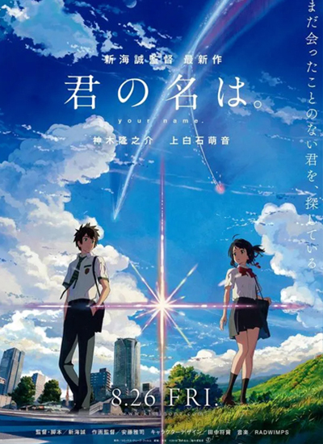
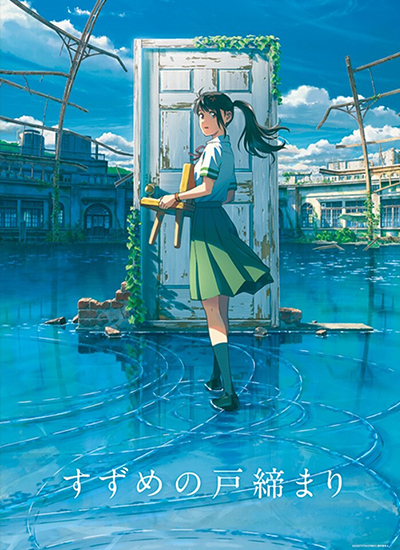

| 「グランドエスケープ」Grand Escape | |
|---|---|
|  |
作曲 : 野田洋次郎 作詞 : 野田洋次郎 編曲：野田洋次郎 主唱： RADWIMPS feat.三浦透子 空飛ぶ羽根と引き換えに 繋ぎ合う手を選んだ僕ら それでも空に魅せられて 夢を重ねるのは罪か 夏は秋の背中を見て その顔を思い浮かべる 憧れなのか、恋なのか 叶わぬと知っていながら 重力が眠りにつく １０００年に一度の今日 太陽の死角に立ち 僕らこの星を出よう 彼が目を覚ました時 連れ戻されない場所へ 「せーの」で大地を蹴って ここではない星へ 行こう もう少しで運命の向こう もう少しで文明の向こう もう少しで運命の向こう もう少しで... 夢に僕らで帆を張って 来たるべき日のために夜を超え いざ期待だけ満タンで 後はどうにかなるさと肩を組んだ 怖くないわけない でも止らない ピンチの先回りしたって 僕らじゃしょうがない 僕らの恋が言う 声が言う 「行け」と言う |
| カナタハルカ（KANATA HALUKA） | |
|---|---|
|  |
作詞：野田洋次郎 作曲：野田洋次郎 恋の意味も手触りも相対性理論も 同じくらい絵空事なこの僕だったんだ 大人になる その時には 出逢えているのかな 何万とある愛の歌 その意味が分かるかな でも恋は革命でも焦燥でも天変地異でもなくて 君だった 君の笑い方はなぜか淋しさに似てた 君の歌い方は今日の朝焼けに見えた 何千年後の人類が何をしているかより まだ誰も知らない顔で 笑う君を見たい 僕にはない 僕にはないものでできてる 君がこの僕を形作ってる そんなこと言うと笑うんでしょ？ そんな顔でさえ見たいと思ってる 僕ひとりのため今日まで 使ってきたこの心 突然君に割り込まれ 大迷惑 大渋滞 でもすると君はこの僕が今宇宙で一番ほしかった 言葉を言うの 君の話す声は 母の鼻歌に似てた 君が黙る姿は 夜の静けさに見えた 何万年後の地球が何色でももういい まだ誰も知らない顔で 笑う僕を君は 何百 何千ともうすでに 見てるよ 聞いてるの 知りはしないでしょう 「あなたさえいれば」 「あなたさえいれば そのあとに続く言葉が どれだけ恐ろしい姿をしていてもざ 抱きしめにいけるよ あなたと見る絶望は あなた無しの希望など霞むほど輝くから 君の笑い方はなぜか優しさに似てた 君の歌い方は今日の夕立に見えた 何千年後の人類が何をしているかより まだ誰も知らない顔で 笑う君を見たい 僕にはない 僕にはないものでできてる 君がこの僕を形作ってる 枯れるほど君の名前叫んだら 君に届くなら今叫ぶよ |
| 前前前世 | |
|---|---|
|
作詞:野田洋次郎 作曲:野田洋次郎 主唱：RADWIMPS やっと眼を覚ましたかい それなのになぜ眼も合わせやしないんだい? 「遅いよ」と怒る君 これでもやれるだけ 飛ばしてきたんだよ 心が身體を追い越してきたんだよ 君の髪や瞳だけで胸が痛いよ 同じ時を吸いこんで 離したくないよ 遙か昔から知るその聲に 生まれてはじめて 何を言えばいい? 君の前前前世から僕は 君を探しはじめたよ そのぶきっちょな 笑い方をめがけてやってきたんだよ 君が全然全部なくなって チリヂリになったって もう迷わない また1から探しはじめるさ むしろ0から また宇宙をはじめてみようか どっから話すかな 君が眠っていた間のストーリー 何億 何光年分の物語を 語りにきたんだよけどいざその姿この眼に映すと 君も知らぬ君とジャレて戯れたいよ 君の消えぬ痛みまで 愛してみたいよ 銀河何個分かの果てに出逢えた その手を壊さずに どう握ったならいい? 君の前前前世から僕は 君を探しはじめたよ その騒がしい聲と涙をめがけ やってきたんだよ そんな革命前夜の僕らを 誰が止めるというんだろう もう迷わない君のハートに旗を立てるよ 君は僕から諦め方を奪い取ったの 前前前世から僕は 君を探しはじめたよ そのぶきっちょな 笑い方をめがけて やってきたんだよ 君が全然全部なくなって チリヂリになったって もう迷わない また1から探しはじめるさ 何光年でも この歌を口ずさみながら |
|
| Rain | |
|---|---|
|
作曲 : 大江千里 作詞 : 大江千里 編曲： 皆川真人 主唱： 秦基博 言葉にできず凍えたままで 人前ではやさしく生きていた しわよせで こんなふうに雑に 雨の夜にきみを抱きしめてた 道路わきのビラと壊れた常夜燈 街角ではそう だれもが急いでた きみじゃない 悪いのは自分の激しさを かくせないぼくのほうさ Lady きみは雨にけむる すいた駅を少し走った どしゃぶりでもかまわないと ずぶぬれでもかまわないと しぶきあげるきみが消えてく Oh oh 路地裏では朝が早いから 今のうちにきみをつかまえ 行かないで 行かないで そう言うよ oh oh ooh hoo, ooh hoo 別々に暮らす 泣きだしそうな空を にぎりしめる強さは今はもうない 変わらずいる心のすみだけで 傷つくようなきみならもういらない Lady きみは雨にぬれて ぼくの眼を少し見ていた どしゃぶりでもかまわないと ずぶぬれでもかまわないと 口笛ふくぼくがついてく oh oh ずいぶんきみを知りすぎたのに 初めて争った夜のように 行かないで 行かないで そう言うよ oh oh ooh hoo, ooh hoo 肩が乾いたシャツ 改札を出る頃 きみの町じゃもう雨は小降りになる 今日だけが明日に続いてる こんなふうに きみとは終われない Lady きみは今もこうして 小さめの傘もささずに どしゃぶりでもかまわないと ずぶぬれでもかまわないと しぶきあげるきみが消えてく oh oh 路地裏では朝が早いから 今のうちにきみをつかまえ 行かないで 行かないで そう言うよ どしゃぶりでもかまわないと ずぶぬれでもかまわないと 口笛ふくぼくがついてく oh oh ずいぶんきみを知りすぎたのに 初めて争った夜のように 行かないで 行かないで そう言うよ oh oh ooh ooh |
|